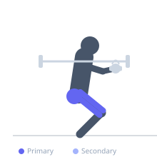
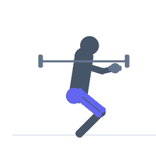

Exercise guide / Sumo Squat
Sumo Squat
The sumo squat uses a significantly wider stance than a conventional squat with the toes pointed outward at approximately 45°. The wide stance shifts the loading emphasis toward the inner thigh adductors and gluteus maximus, while reducing the range of motion required at the ankle. It is accessible to those with limited ankle dorsiflexion and provides a unique adductor stimulus absent from standard squatting variations. It can be performed with a dumbbell, kettlebell, or barbell.
Primary muscles
vastus lateralis
vastus medialis
gluteus maximus
adductor magnus
adductor longus
Secondary muscles
biceps femoris long head
gluteus medius
Stabilizers
erector spinae
transverse abdominis
Equipment
No Equipment (Bodyweight)
Optional
Dumbbell (Fixed)
Kettlebell


Starting position
- Stand with feet much wider than shoulder-width, toes pointed out 30–45°. Hold a dumbbell or kettlebell vertically with both hands between the legs if adding load.
Setup
- Foot width depends on hip structure and mobility — start with feet twice shoulder-width and adjust. Toes should point in the same direction as the knees.
Steps
- Step 1: Stand with wide stance, toes pointed out. Hold weight if applicable. Core braced.
- Step 2: Descend by pushing the knees out in line with the toes while sitting the hips directly down.
- Step 3: Descend until the thighs are parallel to the floor. The wide stance allows the torso to remain upright.
- Step 4: Drive through both feet to return to standing, squeezing the glutes and inner thighs at the top.
- Step 5: Exhale at the top.
Coaching cues
- Knees track over the pinky toe
- Drop straight down — don't let the torso pitch forward
- Squeeze the glutes and inner thighs to stand
Breathing
- Inhale before descent. Exhale as you return to standing.
Range of motion
- Aim for parallel or below while keeping the spine neutral. The wide stance often allows greater depth without lumbar rounding.
Tempo
- 3-0-1-0
Common mistakes
- Knees caving inward (valgus) during descent — actively push knees out over the toes
- Leaning excessively forward despite the wide stance — the sumo squat should allow a more upright torso
- Feet positioned so the toes point further out than the knees
Safety
- Ensure hip external rotator flexibility before using a very wide stance
- If knees are painful in the wide-stance position, reduce foot width
Training
- strength: 5–10 reps
- hypertrophy: 10–15 reps
- endurance: 15–25 reps
- strength: 3–4 sets
- hypertrophy: 3–4 sets
- endurance: 2–3 sets
- Rest: {'strength': 120, 'hypertrophy': 60, 'endurance': 45}